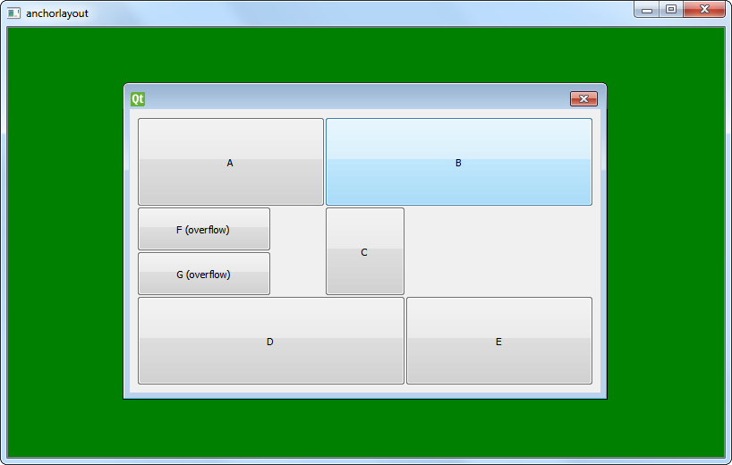

Anchor Layout Example
Demonstrates anchor layout in a graphics view scene.
The Anchor Layout example demonstrates the use of the QGraphicsAnchorLayout class.

The basic steps of this example are:
- Create a QGraphicsScene
- Create widgets
- Create a QGraphicsAnchorLayout
- Create a QGraphicsWidget
- Add vertical and horizontal anchors between the widgets
- View the scene with a QGraphicsView object
Creating a QGraphicsScene
QGraphicsScene scene;
scene.setSceneRect(0, 0, 800, 480);
Creating Widgets
QGraphicsProxyWidget *a = createItem(minSize, prefSize, maxSize, "A");
QGraphicsProxyWidget *b = createItem(minSize, prefSize, maxSize, "B");
QGraphicsProxyWidget *c = createItem(minSize, prefSize, maxSize, "C");
QGraphicsProxyWidget *d = createItem(minSize, prefSize, maxSize, "D");
QGraphicsProxyWidget *e = createItem(minSize, prefSize, maxSize, "E");
QGraphicsProxyWidget *f = createItem(QSizeF(30, 50), QSizeF(150, 50), maxSize, "F (overflow)");
QGraphicsProxyWidget *g = createItem(QSizeF(30, 50), QSizeF(30, 100), maxSize, "G (overflow)");
Creating a Layout
QGraphicsAnchorLayout *l = new QGraphicsAnchorLayout;
l->setSpacing(0);
Creating a QGraphicsWidget
QGraphicsWidget *w = new QGraphicsWidget(0, Qt::Window);
w->setPos(20, 20);
w->setLayout(l);
Adding Anchors
// vertical
l->addAnchor(a, Qt::AnchorTop, l, Qt::AnchorTop);
l->addAnchor(b, Qt::AnchorTop, l, Qt::AnchorTop);
l->addAnchor(c, Qt::AnchorTop, a, Qt::AnchorBottom);
l->addAnchor(c, Qt::AnchorTop, b, Qt::AnchorBottom);
l->addAnchor(c, Qt::AnchorBottom, d, Qt::AnchorTop);
l->addAnchor(c, Qt::AnchorBottom, e, Qt::AnchorTop);
l->addAnchor(d, Qt::AnchorBottom, l, Qt::AnchorBottom);
l->addAnchor(e, Qt::AnchorBottom, l, Qt::AnchorBottom);
l->addAnchor(c, Qt::AnchorTop, f, Qt::AnchorTop);
l->addAnchor(c, Qt::AnchorVerticalCenter, f, Qt::AnchorBottom);
l->addAnchor(f, Qt::AnchorBottom, g, Qt::AnchorTop);
l->addAnchor(c, Qt::AnchorBottom, g, Qt::AnchorBottom);
// horizontal
l->addAnchor(l, Qt::AnchorLeft, a, Qt::AnchorLeft);
l->addAnchor(l, Qt::AnchorLeft, d, Qt::AnchorLeft);
l->addAnchor(a, Qt::AnchorRight, b, Qt::AnchorLeft);
l->addAnchor(a, Qt::AnchorRight, c, Qt::AnchorLeft);
l->addAnchor(c, Qt::AnchorRight, e, Qt::AnchorLeft);
l->addAnchor(b, Qt::AnchorRight, l, Qt::AnchorRight);
l->addAnchor(e, Qt::AnchorRight, l, Qt::AnchorRight);
l->addAnchor(d, Qt::AnchorRight, e, Qt::AnchorLeft);
l->addAnchor(l, Qt::AnchorLeft, f, Qt::AnchorLeft);
l->addAnchor(l, Qt::AnchorLeft, g, Qt::AnchorLeft);
l->addAnchor(f, Qt::AnchorRight, g, Qt::AnchorRight);
Viewing the Scene with QGraphicsView
scene.addItem(w);
scene.setBackgroundBrush(Qt::darkGreen);
QGraphicsView view(&scene);
view.show();
See also Simple Anchor Layout Example.